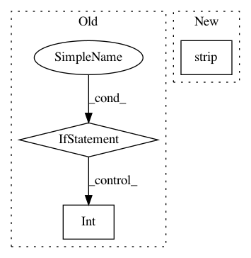

569f8c42734ceb44eedf2c9e7753cfc2d593ac81,utils/parse_config.py,,parse_model_config,#,3
Before Change
else:
key, value = line.split("=")
value = value.lstrip()
if value.replace(".", "").isdigit():
value = float(value) if "." in value else int(value)
module_defs[-1][key.rstrip()] = value
return module_defs
After Change
else:
key, value = line.split("=")
value = value.strip()
module_defs[-1][key.rstrip()] = value.strip()
return module_defs
def parse_data_config(path):
In pattern: SUPERPATTERN
Frequency: 3
Non-data size: 3
Instances
Project Name: eriklindernoren/PyTorch-YOLOv3
Commit Name: 569f8c42734ceb44eedf2c9e7753cfc2d593ac81
Time: 2018-05-27
Author: eriklindernoren@gmail.com
File Name: utils/parse_config.py
Class Name:
Method Name: parse_model_config
Project Name: MycroftAI/mycroft-precise
Commit Name: 5ce56ff7e7f0c085bdff9745471c50aa4d0e1faa
Time: 2017-11-03
Author: matthew3311999@gmail.com
File Name: precise/stream.py
Class Name:
Method Name: main
Project Name: dirty-cat/dirty_cat
Commit Name: f70e71d5c7fdc8e25391e54e74c3402fb323ad5c
Time: 2018-06-06
Author: pierreglaser@msn.com
File Name: examples/plot_employee_salaries.py
Class Name:
Method Name: